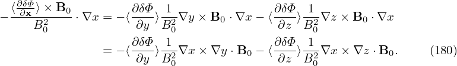
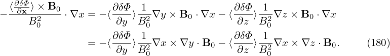
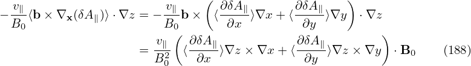

Since δΦ is independent of the velocity in the particle coordinates, the first term (adiabatic term) in expression (187) is trivial and the velocity integration can be readily performed (assume F0 is Maxwellian), giving
which is called adiabatic response. Next, let us perform the gyro-averaging and the velocity integration of the second term in expression (187), i.e.,|
| (190) |
In order to perform the gyro-averaging of δΦ, we expand δΦ in wave-number space as
 | (191) |
and then express x in terms of the guiding center variables (X,v) since the gyro-averaging is taken by holding X rather than x constant. The guiding-center transformation gives
 | (192) |
Using expressions (191) and (192), the gyro-average of δΦ is written as
When doing the gyro-averaging, X is hold constant and thus e∥(X) is also constant. Then it is straightforward to define the gyro-angle α. Let k⊥ define one of the perpendicular direction 1, i.e.,
k⊥ = k⊥
1, i.e.,
k⊥ = k⊥ 1. Then another perpendicular basis vector is defined by
1. Then another perpendicular basis vector is defined by  2 = e∥×1. Then v⊥ is written as
v⊥ = v⊥(
2 = e∥×1. Then v⊥ is written as
v⊥ = v⊥( 1 cosα +
1 cosα +  2 sinα), which defines the gyro-angle α. Then the blue expression in Eq. (193) is
written as Then the gyro-averaging in expression (193) is written as
2 sinα), which defines the gyro-angle α. Then the blue expression in Eq. (193) is
written as Then the gyro-averaging in expression (193) is written as 
|
| (196) |
Next, we need to perform the integration in velocity space, which is done by holding x (rather than X)
constant. Therefore, it is convenient to transform back to particle coordinates. Using X = x + v × ,
expression (196) is written as
,
expression (196) is written as
 | (197) |
Then the velocity integration is written as
Similar to Eq. (194), except for now at x rather than X, ik ⋅ v × is written as
 | (199) |
Since this is at x rather than X, k⊥, v⊥, and Ω are different from those appearing in expression (194). However, since this difference is due to the variation of the equilibrium quantity e∥∕Ω in a Larmor radius, and thus is small and is ignored in the following.
Plugging expression (199) into expression (198) and using dv = v⊥dv⊥dv∥dα, we get
![∫ ∂F ∫ [∫ ( k v ) ( k v ) ∂F ] dk
⟨δΦ ⟩α --0dv = δΦkexp(ik⋅x) J0 -⊥-⊥- exp i-⊥-⊥-sin α --0v⊥dv⊥dv ∥dα ----3.
‚àÇùúÄ Œ© Œ© ‚àÇ ùúÄ (2œÄ)](nonlinear_gyrokinetic_equation219x.png) | (200) |
Note that ‚àÇF0‚àï‚àÇùúÄ is independent of the gyro-angle Œ± in terms of guiding-center variables. When
transformed back to particle coordinates, X contained in ‚àÇF0‚àï‚àÇùúÄ will introduce Œ± dependence via
X = x + v × . This dependence on α is weak since the equilibrium quantities can be considered
constant over a Larmor radius distance evaluated at the thermal velocity. Therefore this dependence
can be ignored when performing the integration over Œ±, i.e., in terms of particle coordinates, ‚àÇF0‚àï‚àÇùúÄ is
approximately independent of the gyro-angle α. Then the integration over α in Eq. (200) can be
performed, yielding
. This dependence on α is weak since the equilibrium quantities can be considered
constant over a Larmor radius distance evaluated at the thermal velocity. Therefore this dependence
can be ignored when performing the integration over Œ±, i.e., in terms of particle coordinates, ‚àÇF0‚àï‚àÇùúÄ is
approximately independent of the gyro-angle α. Then the integration over α in Eq. (200) can be
performed, yielding
In order to perform the remaining velocity integration in expression (201), we assume that F0 is a Maxwellian distribution given by

 , then
, then
|
| (204) |
Again we will ignore the weak dependence of n0(X) and T(X) on v introduced by X = x + v × e∥∕Ω when transformed back to particle coordinates. (For sufficiently large velocity, the corresponding Larmor radius will be large enough to make the equilibrium undergo substantial variation. Since the velocity integration limit is to infinite, this will definitely occur. However, F0 is exponentially decreasing with velocity, making those particles with velocity much larger than the thermal velocity negligibly few and thus can be neglected.)
Parallel integration Using Eq. (204), the expression in the square brackets of Eq. (201) is written as
where v∥ = v‚à•‚àïvt, v⊥ = v‚ä•‚àïvt. Using
 | (207) |
the integration over v∥ in expression (206) can be performed, yielding
 | (208) |
Perpendicular integration Using (I verified this by using Sympy)
 | (209) |
where I0(a) is the zeroth modified Bessel function of the first kind, expression (208) is written
 | (210) |
where b = k⊥2vt2∕Ω2 = k⊥2ρt2. Then the corresponding density (190) is written as
|
| (211) |
In Fourier space, the adiabatic term in expression (189) is written as
 | (212) |
Plugging expression (211) and (212) into expression (187), the polarization density np is written as
Define
 | (214) |
then Eq. (213) is written as
![∫
n = − qn0 δΦ exp(ik ⋅x)[1 − Γ ]-dk-,
p T k 0(2π)3](nonlinear_gyrokinetic_equation234x.png) | (215) |
Expression (215) agrees with the result given in Yang Chen’s notes. Note that the dependence on species mass enters the formula through the Larmor radius ρt in Γ0.


![[ ( ) ]
∫ ∂F0- ∫ ∫ k⊥v⊥- ( e∥) ∂F0 -dk--
‚ü®Œ¥Œ¶‚ü©Œ± ‚àÇùúÄ dv = Œ¥Œ¶k exp(ik ⋅x) J0 Œ© exp ik ⋅v× Œ© ‚àÇùúÄ dv (2œÄ)3.(198)](nonlinear_gyrokinetic_equation216x.png)
![∫ ∫ ∫ ∫ ( )[∫ ( ) ]
∂F0- k⊥v⊥- 2π k⊥v⊥- ∂F0- -dk--
‚ü®Œ¥Œ¶ ‚ü©Œ± ‚àÇùúÄ dv = Œ¥Œ¶kexp(ik⋅x) J0 Œ© 0 exp i Œ© sinŒ± dŒ± ‚àÇùúÄ v⊥dv⊥dv∥(2œÄ)3
∫ [∫ ∫ ( k⊥v⊥ ) (k⊥v⊥ ) ∂F0 ] dk
= Œ¥Œ¶kexp(ik⋅x) J0 -Œ©--- 2œÄJ0 --Œ©-- ‚àÇùúÄ-v⊥dv⊥dv∥ (2œÄ-)3, (201)](nonlinear_gyrokinetic_equation221x.png)
3. (213)](nonlinear_gyrokinetic_equation232x.png)